速览
讲讲受伤时的动作。《大乱斗》设想受伤瞬间立即换成看起来很痛的姿势。受伤动作的第 1 帧因为有顿帧而看得很清楚，所以让它看起来痛很重要。有的作品被打姿势和待机姿势很接近，但《大乱斗》让角色取与待机姿势截然不同的极端姿势，远看也能清楚知道受了伤。不过并非瞬间切换到受伤动作：通过动作补间，从被攻击时的姿势过渡到受伤动作第 1 帧，有一点连接（设计细节「顿帧」一集略有说明）。任何情况下被击中都必定成为受伤姿势，所以对手被打判定很长时，会在相当远处取受伤姿势；保持被打判定伸长而顿帧也有优点，但更重视「被打中的感觉」。也出过这样的问题：对斗士弱攻击时，对手的姿势使其离开，之后的连段打不中——那是被攻击方顶节点位置的问题，改变姿势就免不了这类问题。《大乱斗》的受伤反应分上中下，取与命中位置较接近的反应；地面反应强度又分小中大，合计 9 种；吹飞另有各种变化。和几乎全是人形的其他格斗游戏比，《大乱斗》体型过于独特；即使人形也有持剑、持盾、持武器等变化。若都是标准人形就能复用动作，但并非如此，所以很辛苦，增加一个斗士也是大事。每个受伤动作都避免对称、重视剪影清晰：例如吹飞时扭身让手脚剪影清楚，单纯侧身吹飞就不会这样。为了表现打击感和被打感，受伤动作也做得毫无破绽。题外话：他在《星之卡比 超级豪华版》企划书中这样画了卡比的受伤图案（凭回忆重画）——一瞬间的话这么极端也行，想演出得更激烈更强。
1. 命中瞬间换成痛的姿势 0:03
《大乱斗》设想受伤瞬间立即换成看起来很痛的姿势。
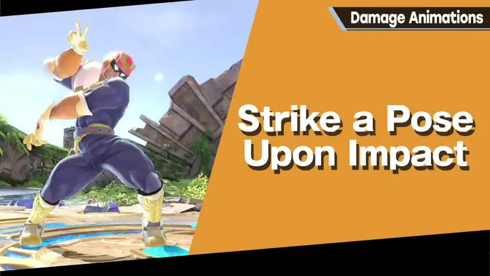
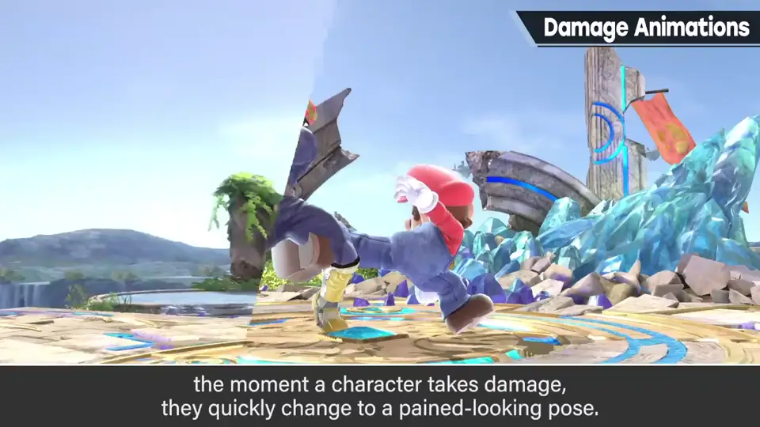
有的作品被打姿势和待机姿势很接近，但《大乱斗》让角色取与待机截然不同的极端姿势，远看也能明白受了伤。
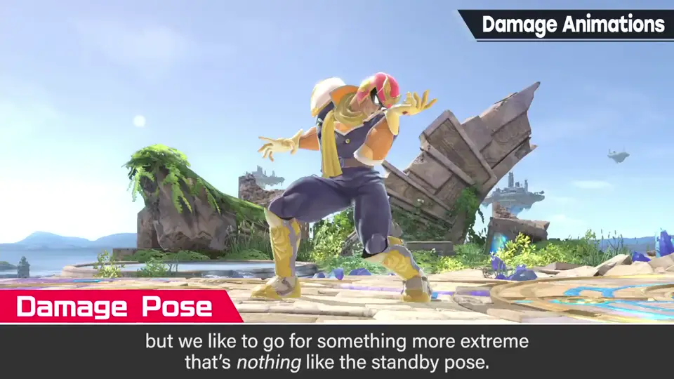
2. 并非瞬间切换 0:45
但并非瞬间切换：通过动作补间，从被攻击时的姿势过渡到受伤动作第 1 帧，有一点连接。
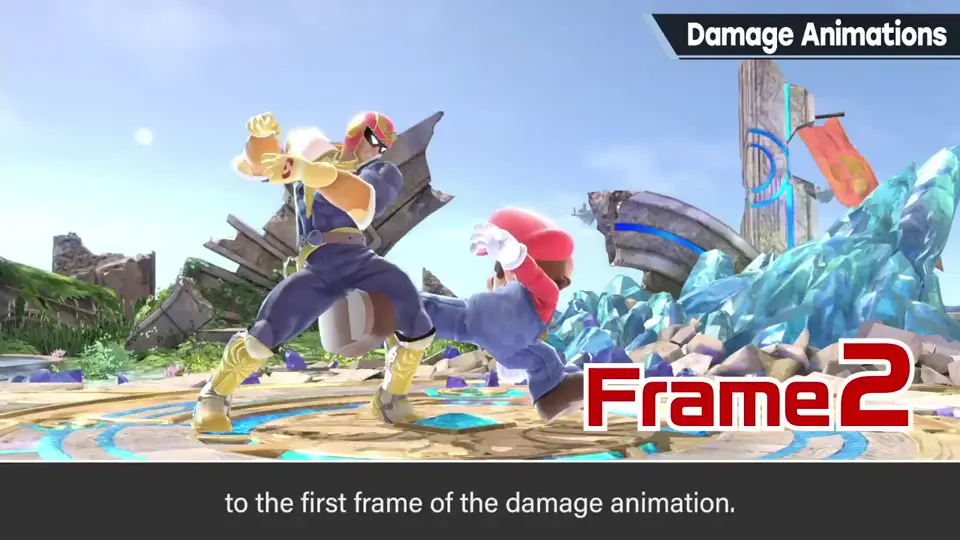
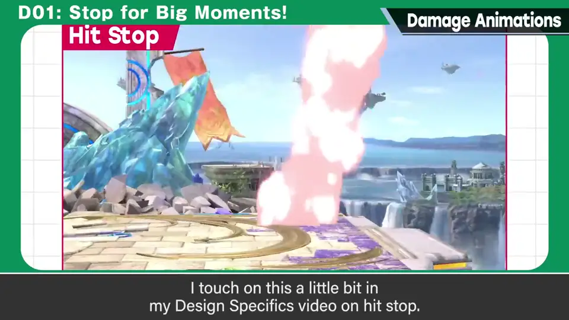
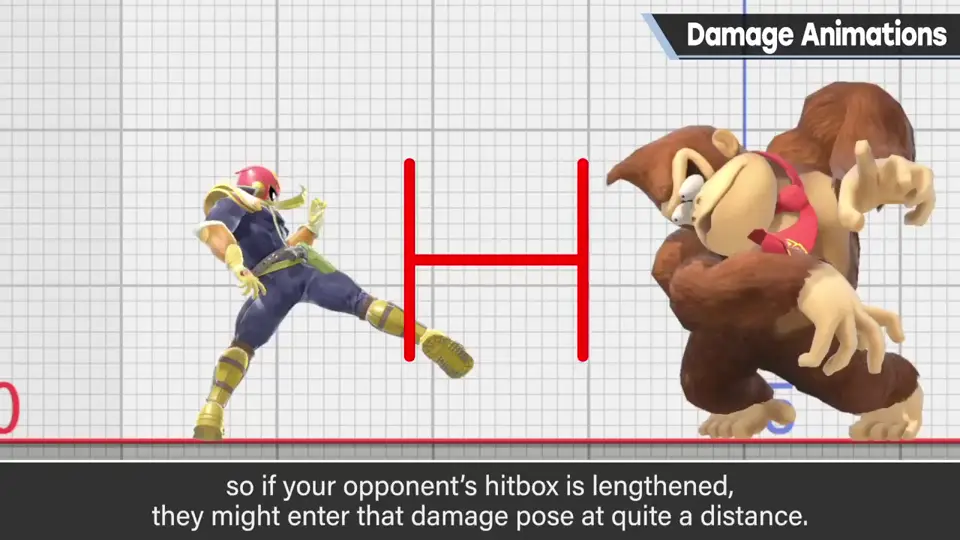
任何情况下被击中都必定成为受伤姿势，所以对手被打判定很长时，会在相当远处取受伤姿势。保持判定伸长而顿帧也有优点，但更重视「被打中的感觉」。
3. 连段问题 1:38
也出过这样的问题：对斗士弱攻击时，对手姿势导致其离开，之后的连段打不中。
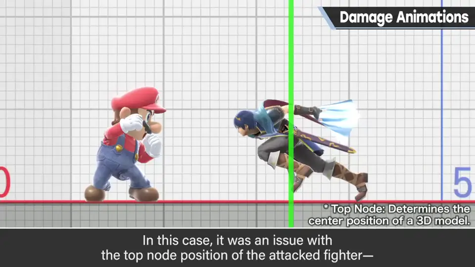
4. 9 种反应 2:00
受伤反应分上中下，取与命中位置较接近的反应；地面反应强度又分小中大。
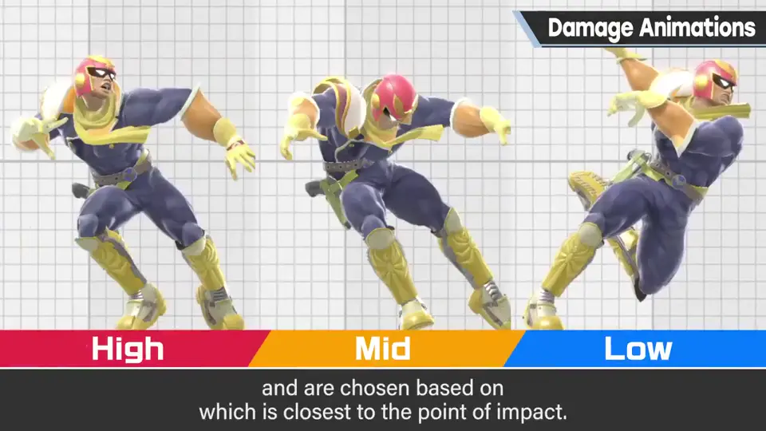
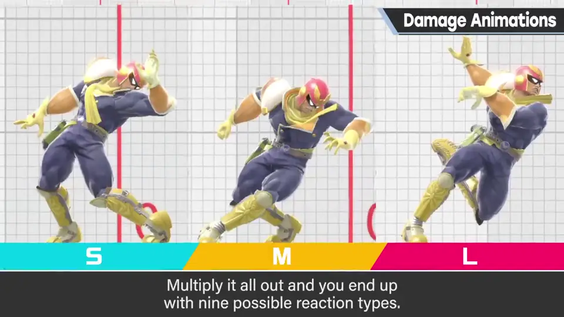
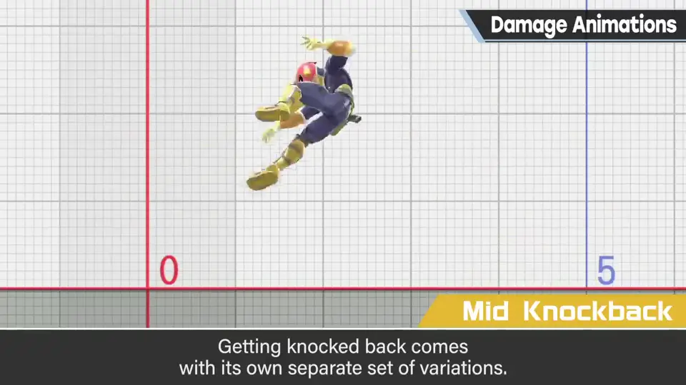
小中大 × 上中下，合计 9 种；吹飞时另有各种变化。
| 位置 \ 强度 | 小 | 中 | 大 |
|---|---|---|---|
| 上 | 上·小 | 上·中 | 上·大 |
| 中 | 中·小 | 中·中 | 中·大 |
| 下 | 下·小 | 下·中 | 下·大 |
5. 体型的难题 2:38
和几乎全是人形的其他格斗游戏比，《大乱斗》的体型过于独特；即使人形也有持剑、持盾、持武器等变化。
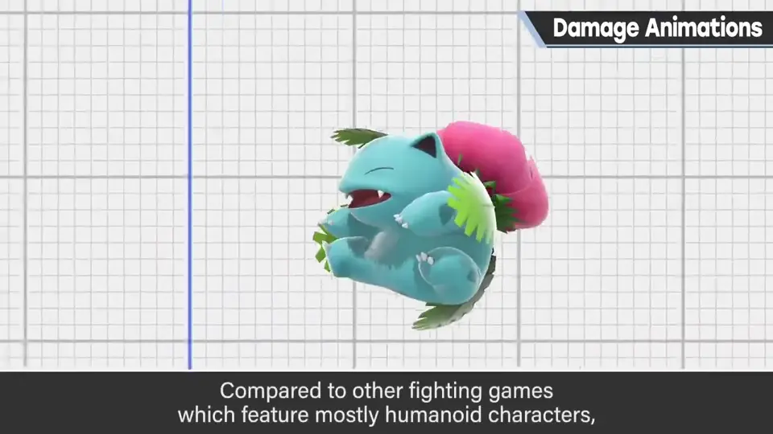
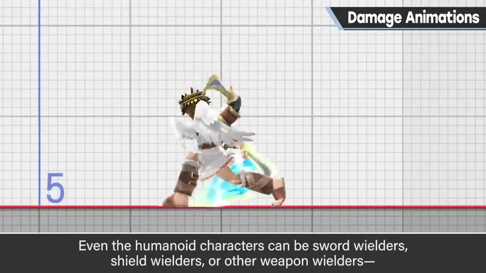
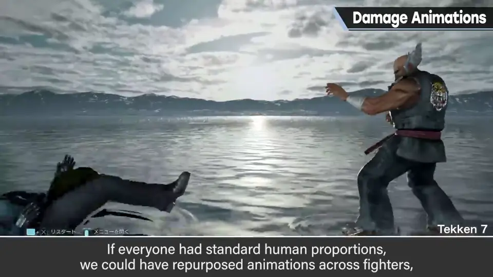
若都是标准人形就能复用动作，但并非如此，所以很辛苦——增加一个斗士也是大事。
6. 避免对称，重视剪影 3:09
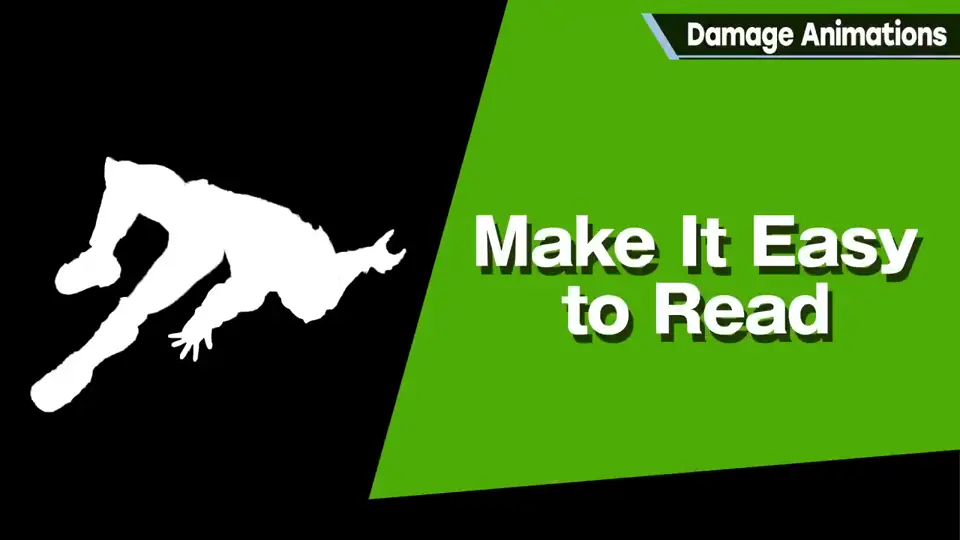
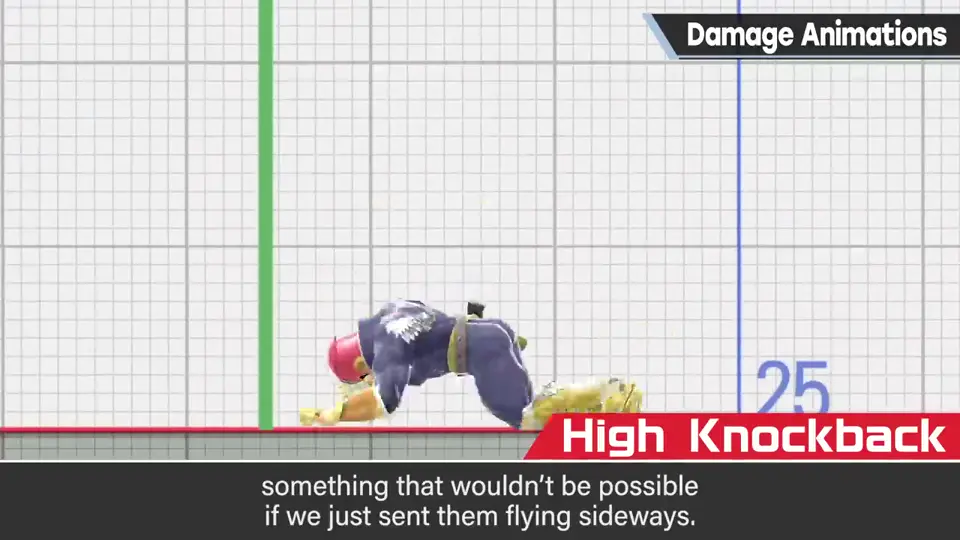
例如吹飞时扭身，手脚的剪影清楚；单纯侧身吹飞就不会这样。
为了表现打击感和被打感，受伤动作也做得毫无破绽。
7. 题外话：卡比 SDX 3:43
他在《星之卡比 超级豪华版》企划书中这样画了卡比的受伤图案（凭回忆重画）。
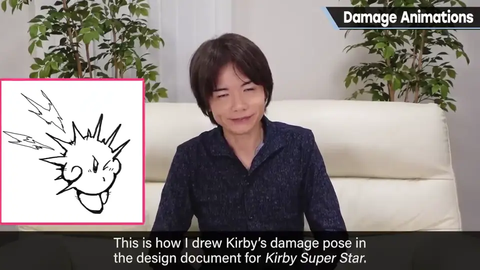
自测题
1. 为什么受伤动作的第 1 帧特别重要？
有顿帧，看得清楚；要做成与待机截然不同的极端痛苦姿势。 0:25
2. 《大乱斗》的地面受伤反应有几种？如何组合？
9 种：上中下（位置）× 小中大（强度）。 2:20
3. 为什么《大乱斗》难以复用受伤动作？
体型过于独特，人形也有持剑、盾、武器等变化。 2:45